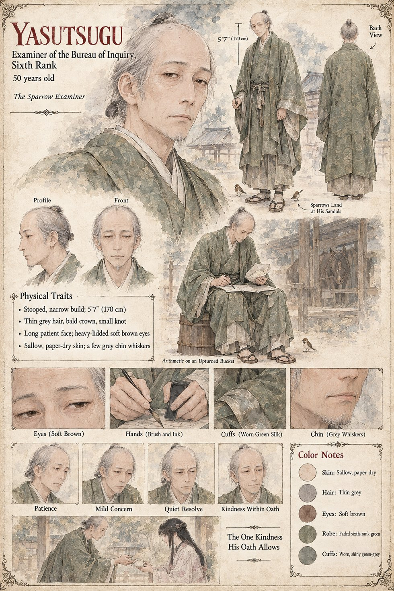

Yasutsugu
Ōmi no Yasutsugu · Examiner of the Bureau of Inquiry, Sixth Rank · called the Sparrow Examiner · 50 years old
A stooped, patient man of fifty who has in unusual measure the one quality his profession requires and almost never rewards: he is willing to be bored by the truth until it finishes. Every morning in the courtyard of the Bureau's low wooden building he sets aside a handful of rice from his own bowl and scatters it on the gravel, and the sparrows, who know his step, come down in a brown rush round his sandals. The clerks call him the Sparrow Examiner, not unkindly, and he has never risen above the Sixth Rank. Assigned the death of Kiyomaro, he interviews fourteen witnesses between the thirteenth and the sixteenth of Eldren. Thirteen say that the pony bolted. The fourteenth is the groom, Kinji, who says that he saw a cat.
He walks the course twice. On the fifth step before the bridge-footing he finds a scrap of chestnut hair and beside it three tufts of russet fur, and in the stable, on the saddlecloth, a pulled thread and the tiny specific tear that a claw leaves in wool. He sits on an upturned bucket and does the arithmetic that nobody has asked him to do, and on the sixteenth writes, in eleven careful sheets, that there was no hand at all: only an animal, a pony and a boy who had been taught to shoot and not to fall. The report goes to the steward of the Minister's house. On the day the summons is served he goes down to the lower archive and finds it bound in a cord that bears the household seal and the words held at the Minister's pleasure, and Tamenaga tells him that the matter is closed. He had not known until that morning that the truth could be taken out of his hands in the middle of a sentence.
When Shizuka comes to him in the courtyard among the sparrows and asks where the motive came from, he says that the Bureau was given it, as a thing established, by the Left Ministry, and that he wrote a report on the matter which is no longer in his keeping and which he is not at liberty to describe. It was eleven sheets long, he says, and looks at the sparrows: all that his oath allows. She does not press it, and he bows lower than protocol. At the Reading of the Tally he sits among the clerks at the back and looks at the floor for the whole of what follows. Her other errand of those weeks, which she never names even to her cousin, is put to him in the same courtyard: the single favour that a man bound by a cord and a seal can grant without breaking either, the correction of a clerk's error. A daughter's name is carried off the Tomobe roll and onto her mother's father's, as a mistake discovered too late to be undone, and the Bureau's list of the disgraced ends with a commander, a captain and a wife, and omits a child; it is the only entry in all the ledgers of Himuro that is ever altered on Shizuka's account. He scatters his rice on every morning of every year that remains to him with the faint private rigidity of a man discharging a sentence, and after the Stone has come apart a young clerk begins, without being told why, to do the same.
The manuscript gives his name, age, rank, sparrows and habits. The sheet's stooped narrow build of about 5 ft 7 in, thin grey hair with a bald crown and a small knot, heavy-lidded soft brown eyes, sallow paper-dry skin, a few grey chin whiskers, and the faded sixth-rank green silk with its worn cuffs are its own, and so is its last scene, The One Kindness His Oath Allows, which draws him handing a small folded paper to a young woman in a pale patterned robe.
“It was eleven sheets long.”
Appears In

Related Subjects


Related Records

Every morning in the courtyard of the Bureau of Inquiry, Ōmi no Yasutsugu sets aside a handful of rice from his own bowl and scatters it on the gravel, and the sparrows come down in a brown rush around his sandals; his clerks, watching from the porch, call him the Sparrow Examiner, not unkindly.